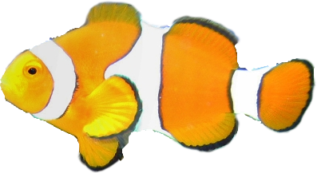

Add a Job Application
Only focus on the next step
Daily Goal
Aim for 5 applications today
Let’s begin submitting that first application for today.

Your aid to help you ride the wave to your next role.”
Aim for 5 applications today
Let’s begin submitting that first application for today.